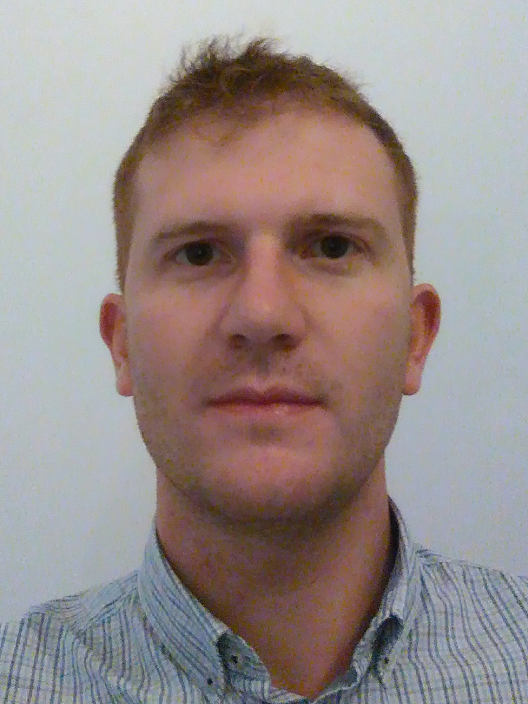

My name is Paolo Franceschi.
I received a B.Sc. in aerospace engineering and an M.Sc. in mechanical engineering from Politecnico of Milano in 2015 and 2017, respectively.
During my studies, I had the opportunity to work on my master thesis project at IBM Almaden Research Center in San Josè, California.
There I spent about six months developing a bipedal platform. My main activities were modeling the bipedal robot and implementing basic control strategies to allow robust walking.
Since January 2018, I have been a research fellow at STIIMA-CNR. My main research focuses are interaction control and workspace optimization for manipulating and assembling large objects.
I was involved in the H2020 Eureca project, aiming to automatize the assembly of the airplane's interior. (2018-2020)
I am currently involved in the H2020 DrapeBot project (2021-2024), where I am developing controllers for the shared transport of carbon fiber plies.
Since November 2020, I have also been a Ph.D. student at the University of Brescia (UniBs), where I am focussing on developing control for physical Human-Robot Interaction (pHRI) based on game theory.